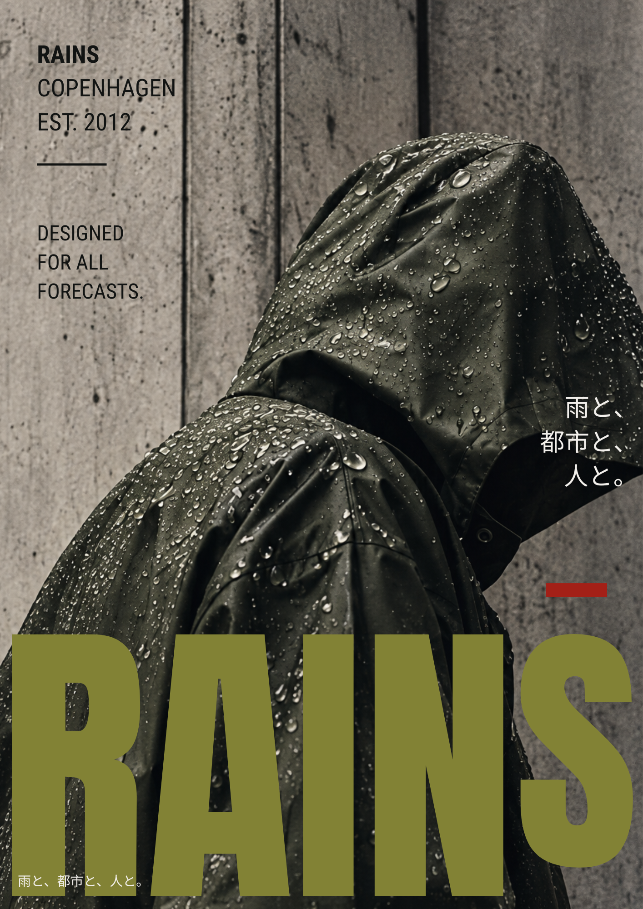
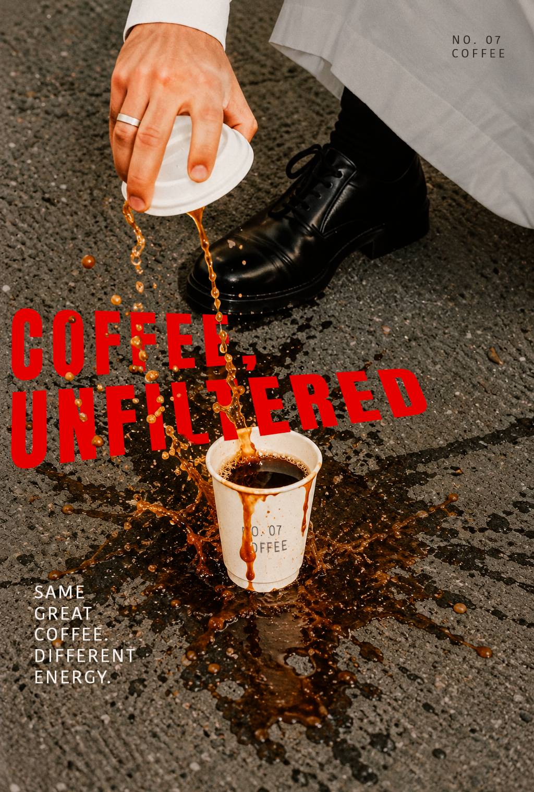
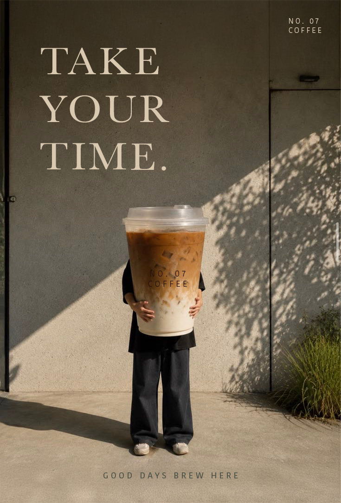

(01)
ART DIRECTION POSTERS



BRIEF
Translating a brand’s visual identity into new directions, with art direction as the tool.
Three posters, one method. Each poster started as a written art direction, built from keywords, three visual rules, colour and typography directions and thoughts on image treatment, before any layout was made.
Two directions for the same coffee brand, NO. 07 COFFEE, show how far one product can be pushed: one raw and chaotic, one calm and minimalistic. The Rains poster applies the same method to a cultural brief, exploring how the same brand identity can be adapted to a different cultural context.
POSTER 01
RAINS — TOKYO TAKEOVER
Same brand, different culture: translating Rains’ Copenhagen identity into an urban Tokyo poster.
A hooded figure covered in raindrops stands against a concrete wall, shot in a grainy, desaturated, documentary style. The oversized olive-green RAINS wordmark overlaps the jacket, while small text blocks such as “Copenhagen, Est. 2012” and “Designed for all forecasts.” work as graphic elements. The only local layer is a short Japanese line, “雨と、都市と、人と。” (with rain, with the city, with people), set quietly in Noto Sans JP.
URBAN — FUNCTIONAL — EDITORIAL
TOOL — CANVA
VISUAL RULES
- 01Oversized typography
The wordmark is huge, overlaps the photograph and creates a clear visual hierarchy.
- 02Monochrome photography + one accent colour
Desaturated, dark imagery lets the olive green and a small red detail do the work.
- 03Information as graphic elements
Small text blocks, coordinates and thin lines are part of the layout itself.
COLOUR
- Olive green#828235
- Off-White#F2EFEB
- Black#121413
- Red#A32017
- Concrete grey#777570
Olive green is the main colour, off-white carries the information and red is used only for small accents.
TYPOGRAPHY
- AntonRAINS — narrow, heavy and slightly brutal.
- Roboto CondensedCOPENHAGEN, EST. 2012 and the small motto text.
- Noto Sans JPOnly for the Japanese lines “雨と、都市と、人と。”
IMAGE TREATMENT
Grainy, desaturated and documentary-inspired. Rain, concrete and a hooded figure make the product feel at home in an urban setting.
LOCAL ADAPTATION · COPENHAGEN → TOKYO
Rains’ functional, minimal Scandinavian identity is kept, while the imagery, the typographic composition and the urban context are adapted to Tokyo. Japanese is used as a small, quiet layer rather than decoration, to avoid stereotypes and surface-level cultural clichés.
POSTER 02
COFFEE, UNFILTERED.
Direction 01 — Coffee Chaos
A hand tips a lid and coffee runs down over a cup on the asphalt, splashing in every direction. The red condensed headline sits partly behind the spill, so the text becomes part of the mess. Direct flash, hard shadows and sharp details make the poster raw, chaotic and energetic, and the tagline “Same great coffee. Different energy.” ties it back to the brand.
RAW — CHAOTIC — ENERGETIC
TOOL — ADOBE PHOTOSHOP
VISUAL RULES
- 01Coffee must be in motion
Coffee splashes, runs, drips, tips over or flies through the air.
- 02Imperfection adds character
A spilled cup on asphalt gives the poster a more editorial, artistic feel.
- 03Break the expected
Use unexpected angles, positions or environments to move coffee away from traditional product imagery.
COLOUR
- Coffee brown#54341B
- Off-white#F1EEEA
- Charcoal#35322E
- Red#d90000
The palette is built around warm neutrals, with bright red used as an accent to create contrast and energy.
TYPOGRAPHY
- AntonBold and condensed, used for the main “COFFEE, UNFILTERED” headline.
- Kohinoor DevanagariClean and minimal, used for the tagline and smaller text.
IMAGE TREATMENT
Direct flash, high contrast, a little grain, hard shadows and very sharp details. Slightly desaturated and raw surroundings with coffee in dark brown and orange.
POSTER 03
TAKE YOUR TIME.
Direction 02 — Making Coffee the Main Character
A person almost disappears behind an absurdly large iced coffee in front of a simple concrete wall. Natural sunlight, hard shadows and a warm colour grade keep it calm, while the scale makes it surreal and a little humorous. The Baskerville headline gives it a fashion-magazine feel, and small details such as “No. 07 Coffee” and “Good days brew here” stay quiet in the background.
MINIMALIST — CALM — SURREAL
TOOL — ADOBE PHOTOSHOP
VISUAL RULES
- 01Keep it minimal
Avoid unnecessary elements and let the coffee and human interaction speak for themselves.
- 02Exaggerate the ordinary
Turn an everyday coffee moment into something unexpected or surreal.
- 03Create visual calm
Use simple compositions, neutral surroundings and negative space to create a calm, editorial feel.
COLOUR
- Cream#D7CAB4
- Coffee brown#986E46
- Warm grey / muted green#4D5147
Soft neutrals create a calm, minimal expression, with warm coffee tones adding subtle contrast..
TYPOGRAPHY
- BaskervilleSerif headline, giving “TAKE YOUR TIME.” a refined fashion-editorial feel.
- Kohinoor DevanagariSans serif for the small details such as “NO. 07 COFFEE”.
IMAGE TREATMENT
Natural sunlight and hard shadows, warm colour grading, light grain and an imperfect, analogue feel.
REFLECTION
Writing the rules first gave every poster a clear framework to work within.
Defining keywords and three visual rules before designing meant each poster had a clear limit to work within. The two coffee posters show how the same product can carry completely different personalities depending on the rules behind it, and the Rains poster shows that adapting to a culture is about keeping the brand’s core while changing the context, not about adding clichés.